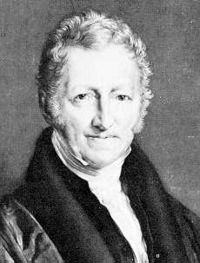
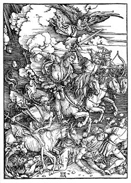
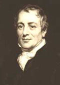
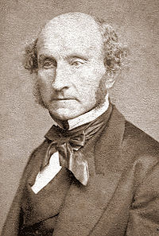

With this lecture: Say’s Law
Contents · 17 slides
- The Classical Consensus
- Thomas Malthus
- Essay on the Principle of Population
- Principle of Population
- Principle of Population
- David Ricardo
- Smith: Absolute Advantage
- Theory of Comparative Advantage
- Theory of Comparative Advantage
- Theory of Comparative Advantage
- Theory of Comparative Advantage
- Theory of Rent
- Importance of Rent
- Theory of Wages and Profits
- John Stuart Mill
- Mill on Distribution
- Mill Quotes on Action
1 The Classical Consensus
- Malthus, Ricardo, and Malthus
2 Thomas Malthus

- 1766-1834
- Essay on the Principle of Population
- Defender of the Corn Laws
- Theory of Overproduction
3 Essay on the Principle of Population
- Growth of food output is arithmetic
- Growth of population is geometric
- Implication for poor laws
- Major influence on Darwin

4 Principle of Population
- "Yet in all societies, even those that are most vicious, the tendency to a virtuous attachment is so strong that there is a constant effort towards an increase of population. This constant effort as constantly tends to subject the lower classes of the society to distress and to prevent any great permanent amelioration of their condition".
- —Malthus T.R. 1798. An essay on the principle of population. Chapter II, p18 in Oxford World's Classics reprint.
- "The way in which these effects are produced seems to be this. We will suppose the means of subsistence in any country just equal to the easy support of its inhabitants. The constant effort towards population... increases the number of people before the means of subsistence are increased. The food therefore which before supported seven millions must now be divided among seven millions and a half or eight millions. The poor consequently must live much worse, and many of them be reduced to severe distress. The number of labourers also being above the proportion of the work in the market, the price of labour must tend toward a decrease, while the price of provisions would at the same time tend to rise. The labourer therefore must work harder to earn the same as he did before. During this season of distress, the discouragements to marriage, and the difficulty of rearing a family are so great that population is at a stand. In the mean time the cheapness of labour, the plenty of labourers, and the necessity of an increased industry amongst them, encourage cultivators to employ more labour upon their land, to turn up fresh soil, and to manure and improve more completely what is already in tillage, till ultimately the means of subsistence become in the same proportion to the population as at the period from which we set out. The situation of the labourer being then again tolerably comfortable, the restraints to population are in some degree loosened, and the same retrograde and progressive movements with respect to happiness are repeated".
- —Malthus T.R. 1798. An essay on the principle of population. Chapter II, p19 in Oxford World's Classics reprint.
5 Principle of Population
- What to Do?
- Repealing Corn Laws won’t help: just get more people!
- Poor relief is counter-productive: see above.
- Self-restraint is the primary positive option.
6 David Ricardo
- 1772-1823
- Theory of Comparative Advantage
- Repeal of the Corn Laws
- Labour Theory of Value

7 Smith: Absolute Advantage
- Portugal
- Scotland
8 Theory of Comparative Advantage
- There can be gains to trade Even when one party has all the absolute advantage.
- Kobe Bryant
- House painting: $40 per hour.
- Basketball: $10,000 per hour
9 Theory of Comparative Advantage
- Joe the painter:
- House painting: $20 per hour.
- Basketball: $1 per hour
- Bryant has a 2-to-1 advantage as a house painter, but a 10,000-to-1 advantage as a hoop star.
10 Theory of Comparative Advantage
- Autarchy
- Bryant:
- 10 hours painting * $40 per hour = $400
- 10 hours b-ball * $10,000 per hour = $100,000
- Total output: $100,400
- Joe:
- 10 hours painting * $20 per hour = $200
- 10 hours b-ball * $1 per hour = $10
- Total output: $210
- Between them: $100,610 worth of output.
- Bryant:
11 Theory of Comparative Advantage
- Bryant hires Joe to paint.
- Bryant:
- 20 hours basketball * $10,000 per hour = $200,000
- Total output: $200,000
- Joe:
- 20 hours painting * $20 per hour = $400
- Total output: $400
- Their total output has risen to $200,400. But, more importantly Joe the painter, who was worse at both jobs, was still able to nearly double the value of his output by concentrating on painting, in which he had a comparative advantage, then by exchanging with Bryant.
12 Theory of Rent
- "The Law of Rent was formulated by David Ricardo around 1809. It was the first clear exposition of the source and magnitude of land rents, and is among the most important and firmly established principles of economics. The Law of Rent states that the rent of a land site is equal to the economic advantage obtained by using the site in its most productive use, relative to the advantage obtained by using marginal (i.e., the best rent-free) land for the same purpose, given the same inputs of labor and capital.” (Wikipedia)
13 Importance of Rent
- As population grows, marginal land cultivated.
- Increasing rent on better land eats up profits and wages.
- Subsistence wages and low profits
14 Theory of Wages and Profits
- Notwithstanding the tendency of wages to conform to their natural rate, their market rate may in an improving society, for an indefinite period, be constantly above it; for no sooner may the impulse, which an increased capital gives to a new demand for labor, be obeyed, than another increase of capital may produce the same effect; and thus, if the increase of capital be gradual and constant, the demand for labour may give a continued stimulus to an increase of people.…
- It has been calculated, that under favourable circumstances population may be doubled in twenty-five years; but under the same favourable circumstances, the whole capital of a country might possibly be doubled in a shorter period. In that case, wages during the whole period would have a tendency to rise, because the demand for labour would increase still faster than the supply. (On the Principles of Political Economy, Chapter 5, "On Wages").
15 John Stuart Mill
- 1806-1873
- Utilitarianism
- Champion of civil liberties and women’s rights
- Wrote the standard text of the period 1850-1900
- Separation of production and distribution

16 Mill on Distribution
- "Private property being assumed as a fact, we have next to enumerate the different classes of persons to whom it gives rise; whose concurrence, or at least whose permission, is necessary to production, and who are therefore able to stipulate for a share of the produce. We have to inquire, according to what laws the produce distributes itself among these classes, by the spontaneous action of the interests of those concerned: after which, a further question will be, what effects are or might be produced by laws, institutions, and measures of government, in superseding or modifying that spontaneous distribution."
17 Mill Quotes on Action
- “All action is for the sake of some end; and rules of action, it seems natural to suppose, must take their whole character and color from the end to which they are subservient.”
- “All desirable things... are desirable either for the pleasure inherent in themselves, or as a means to the promotion of pleasure and the prevention of pain.”